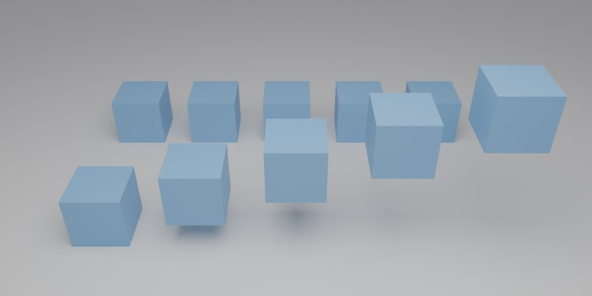

Bonus lesson
The Array Modifier
Fences, stairs, tiles and rows of windows all repeat one shape. The Array modifier creates copies of the base object, each one offset from the one before it. You model one piece, and Blender repeats it. The manual says it is also useful for creating complex repetitive shapes, and that you can use more than one Array modifier on the same object.
1. Add the modifier
Select the object, open the Modifiers tab as in Lesson 7, and add Array from the Generate group. Fit Type controls how long the array is. The manual lists three choices. Fixed Count makes the number of copies you type in Count. Fit Length makes as many copies as fit inside a length you set. Fit Curve fits copies along a curve object.

2. Choose how copies are offset
Relative Offset moves each copy by the size of the object's bounding box, times a factor you set for X, Y and Z. A factor of 1 puts copies side by side, and a bigger number leaves gaps. Constant Offset moves each copy by a fixed distance on X, Y and Z, no matter how big the object is, which is how the front row in the picture climbs. Object Offset takes the offset from another object. The manual suggests an empty near the first object, and says rotating that empty can make a circle or a spiral of copies.
3. Scale and counts
The manual notes that Fit Length and Fit Curve use the object's local size, so scaling the object in Object Mode does not change how many copies you get. It says applying the scale can help, which connects to the bonus lesson on Apply Scale.
Read the manual page on the Array modifier.
Exercise
Add a cube and give it an Array modifier with Fixed Count 4. Change the Relative Offset X factor from 1 to 1.5 and watch the gaps open. Then turn off Relative Offset, turn on Constant Offset, and make a staircase by setting a distance on X and on Z.